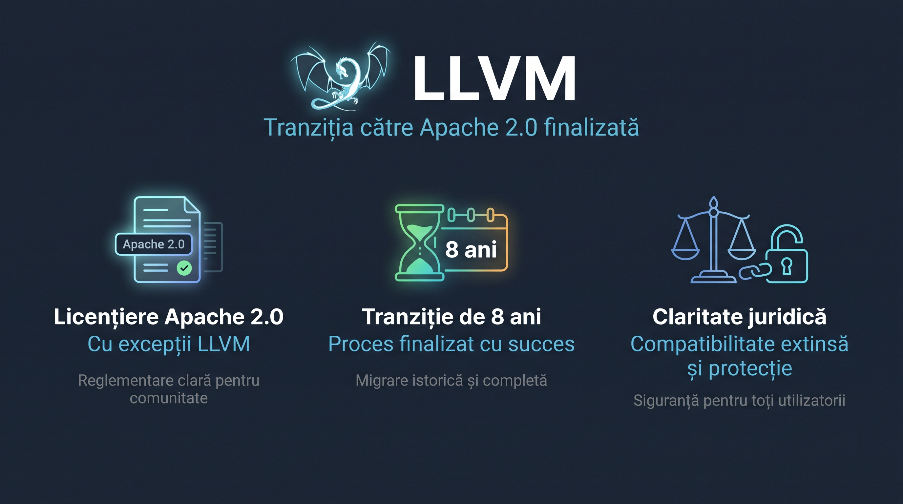

LLVM încheie tranziția de opt ani către licențierea Apache 2.0 (cu excepții LLVM)

Proiectul LLVM, infrastructura de compilatoare care stă la baza Clang și a numeroase alte unelte de dezvoltare, a anunțat finalizarea oficială a procesului de relicențiere demarat în urmă cu opt ani. Inițiativa acoperă acum peste 99,5% din totalul liniilor de cod contribuite vreodată la proiect sub Apache License 2.0 with LLVM Exceptions.
1. Contextul și evoluția procesului de relicențiere (2018 – 2026)
Unificarea cadrului juridic: Procesul a început în 2018 cu scopul de a înlocui vechea licență University of Illinois/NCSA Open Source License și licența MIT (folosită de anumite biblioteci runtime) cu un model de licențiere unificat și modern.
Contribuții noi vs. cod istoric: Începând cu 19 ianuarie 2019, toate contribuțiile noi au fost acceptate direct sub Apache 2.0 with LLVM Exceptions. Pentru codul scris anterior acestei date, a fost necesară obținerea acordului explicit din partea deținătorilor originali ai drepturilor de autor.
Sprijin din partea comunității și industriei: De-a lungul celor opt ani, peste 1.300 de contribuitori individuali și aproximativ 100 de companii și organizații au semnat acorduri pentru redistribuirea contribuțiilor lor istorice sub noua licență.
2. Acoperirea codului (99,5%) și gestionarea excepțiilor rămase
Pragul de finalizare: Peste 99,5% din toate liniile de cod contribuite istoric la LLVM sunt acum fie acoperite de noua licență, fie eliminate din baza de cod, fie prea mici pentru a intra sub incidența drepturilor de autor. Având în vedere atingerea acestui prag, menținătorii au decis să încheie oficial campania activă de colectare a semnăturilor.
Identificatori SPDX pentru contribuțiile nesemnate: Dezvoltatorii care nu au semnat un acord de relicențiere și nu doresc ca munca lor anterioară anului 2019 să fie distribuită sub noii termeni pot contacta echipa LLVM pentru a se asigura că fragmentele respective poartă identificatorul de licență SPDX corespunzător.
3. Actualizarea documentației în versiunile viitoare (LLVM 24 / 25)
Clarificare privind stadiul actual: Anunțul nu marchează o schimbare bruscă de licență în prezent, întrucât LLVM utilizează deja Apache 2.0 with LLVM Exceptions pentru codul nou încă din 2019.
Calendarul actualizărilor oficiale: Proiectul va actualiza fișierele
LICENSEși documentația aferentă după crearea ramurii de lansare LLVM 24 (estimată la începutul lunii ianuarie 2027), modificările urmând să fie reflectate oficial în LLVM 25 pentru a marca încheierea completă a tranziției.